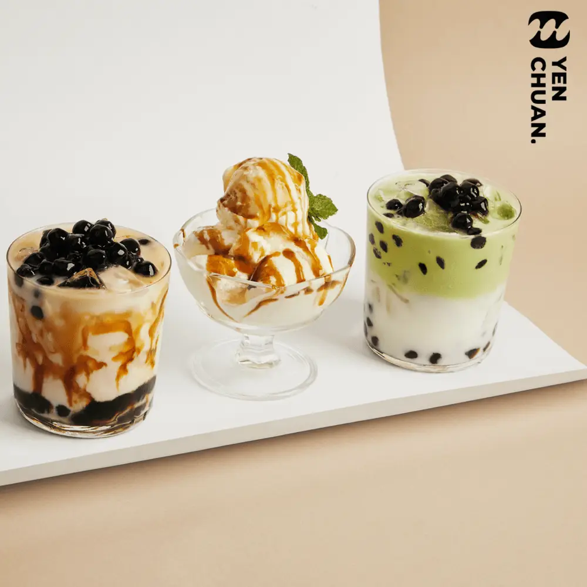
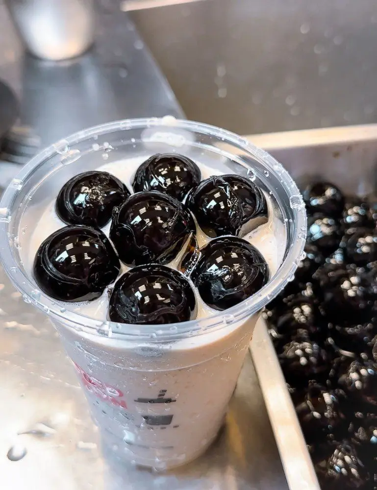
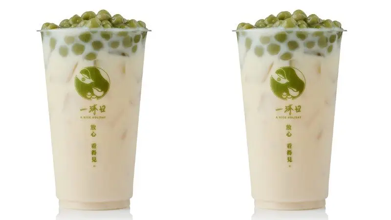
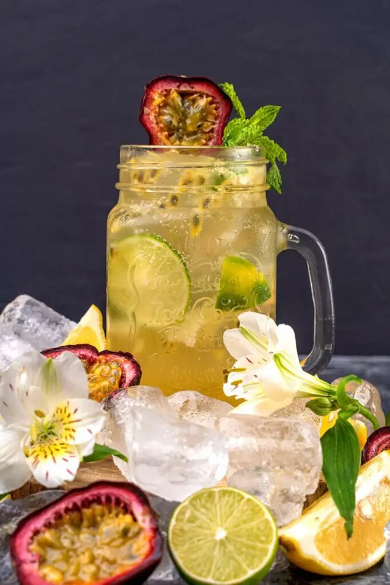
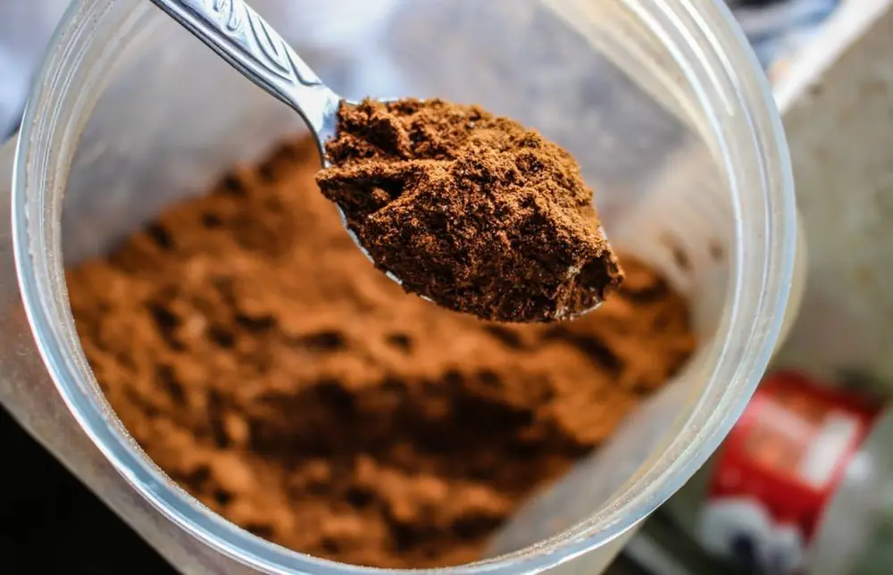
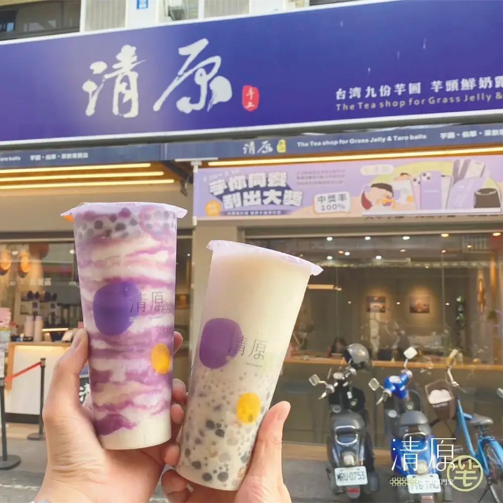
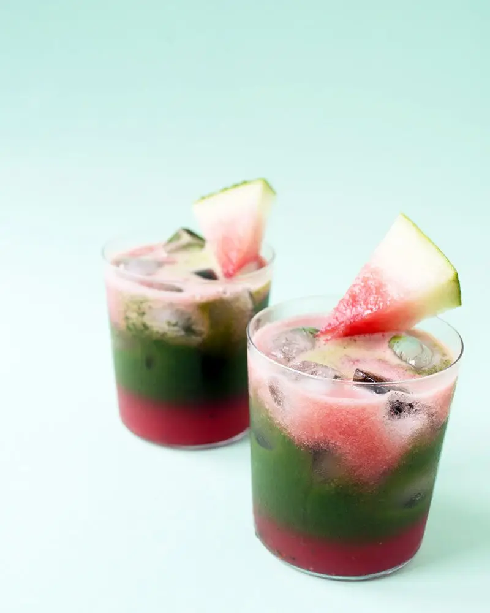

Articles / Tips & trends
How to spice up your bubble tea menu
2024-09-17 · Tips and Trivia, Tips and Trivia

Original public content from Yen Chuan. Product claims and specifications remain subject to confirmation by the company.
There’s a lot more to bubble tea than just milk tea and tapioca pearls – over the years various brands have introduced more options than you can shake a stick at!
Are you a newcomer trying to dip your feet into this exciting scene? Or are you a bubble tea brand looking for ways to refresh your menu? Here are some tips to help you get inspired:
Fun with Toppings
Being the birthplace of bubble tea, where else to look into than Taiwan for what’s hip and happening? In this competitive, cut-throat market, many brands cook up innovative drinks and gimmicks to try and get viral.

One example is the giant boba pearl! If you’ve been looking around social media in Taiwan and China, you’d probably have come across photos of milk teas with giant pearls crowding the cups.
These are in fact no tapioca pearls, but rather grass jelly! The grass jelly mixture is poured into special molds and left to set, forming giant balls that look like tapioca pearls.
Fun, eye-catching and refreshing, all rolled into one!
This isn’t the only brand going for more traditional toppings, however. Another brand had the bright idea of using Chhau-a-koe in place of tapioca pearls. What is Chhau-a-koe? It’s a traditional Hokkien rice cake made with glutinous rice and Chinese mugwort. Thanks to the mugwort added, the rice cake has a unique grassy taste and a light green colour not unlike matcha. Perfect for milk teas and oolong teas!

Fancy something with a more Japanese flair? Ditch the ol’ red adzuki beans or mini mochi, why not a whole dango? That’s right, some bubble tea shops place a whole skewer of Japanese dango on top of their drinks, complete with a generous sprinkling of brown sugar. A drink and a snack, all rolled into one!
Healthy bubble tea
Normally you’d think health and nutrition has no place in bubble tea, but things are different nowadays. As people are more health-concious, there’s a growing demand for healthier options.

Some brands market themselves as “clean” bubble tea, dropping syrups and powders in favour of more natural ingredients such as fresh fruit slices and fruit jams.
Instead of creamers, they use fresh milk to make their milk teas. Alternatively, some offer plant-based milks for the vegetarian/vegan crowd. This includes the classic soya milk, or newer choices such as almond milk and oak milk. The nutty, malty taste from these plant milks offer a new experience to boot!
While most shops use fructose to sweeten their drinks, these brands opt for more natural alternatives such as palm sugar, or natural sweeteners including stevia and monk fruit extract.
Another growing trend is bubble tea with added nutrients. Getting tired of the usual protein shakes? Some brands sell bubble tea powders with added proteins, such as whey proteins or plant-based alternatives.
Others sell syrups with added nutrients, or tea blends mixed with various herbs for additional health benefits.

Healthy toppings
Need a healthier alternative for tapioca balls? Here are some delicious choices to pick from:
Crystal boba
Also known as konjac pearls, these balls are made of konjac/agar instead of tapioca. Not only do they offer a fun crispy mouthfeel, they’re also low on calories and contain soluble fibres!
Basil seeds
Basil seeds are not just for growing herbs, they’re also edible! When soaked in water (or a drink), they offer a unique jelly-like, crunchy texture.
What’s more, they’re jam-packed with soluble fibres, minerals and other nutrients!
Beans and oats
Once a staple in traditional Taiwanese desserts, these colourful toppings have made their way into boba tea too!
For example, pair up red adzuki beans with matcha as a classic combo, or add to coconut milk for a southeast Asian flair!
Layered bubble tea

Want to make an eye-catching cup of boba tea? It’s no longer just fruit teas or brown sugar boba, others have embraced that layered look in different ways!
One easy way to do so is our range of camo powders. By mixing the powders with some water to form a paste, you can then smear the paste onto the cups (much like the classic Tiger dot syrup) before adding the drink of your choice.
Experiment with different colours/flavours combo for a feast in both eyes and taste!
Another growing trend is to use different layers to mimic fruits or even whole sceneries! For example, use watermelon slush and matcha to make an adorable drink that actually looks like watermelon!
With some butterfly pea tea or our colour-changing powder, you can easily recreate a clear blue sky in a cup. Add some fluffy cream top clouds, or add avocado for a sun-soaked grassy field!

Sips and Snacks
Who says bubble tea shops are only for drinks? Some brands have started to offer food as well, with both sweet and savoury treats to pair your drinks with.
One trend is to pair boba tea with European-style bread and pastries, the soft fluffy bread a perfect companion to the rich-tasting milk teas. Sometimes the bread/pastries are baked with ingredients commonly found in boba tea, such as taro, strawberries, matcha or even tapioca pearls!
Others go for a more Asian-inspired approach, picking traditional Taiwanese desserts such as grass jelly, dofu hua and shaved ice. Another popular choice is Hong Kong-style egg waffles, which has since evolved into a fruit-packed delight much like Japan’s folded crepes.
More bubble inspiration
Need some more drink ideas to jog your creativity? Check out our collection of recipes, or drop us a message!